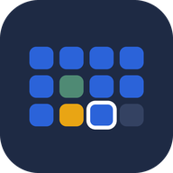

바른결 관리형 독서실온라인 자습실
「공부 시작」을 누르고 카메라를 허용하면 여기에 내 모습이 보입니다.
대기 중
오늘 공부한 시간
00:00
오늘 기록
00:00자리비움
00:00졸음 의심
00:00휴식
- 공부를 시작하면 여기에 기록이 쌓입니다.
내 계정
고개를 깊이 숙여 책을 읽으면 졸음으로 잘못 표시될 수 있어요. 선생님이 확인한 뒤 안내합니다.
오늘 목표 4시간0%